ชุดสไปรต์ 2D รอบแรก (Nano Banana Pro 2k) · คลิกรูปเพื่อเปิดชีตเต็ม · "cutout" = PNG พื้นใส
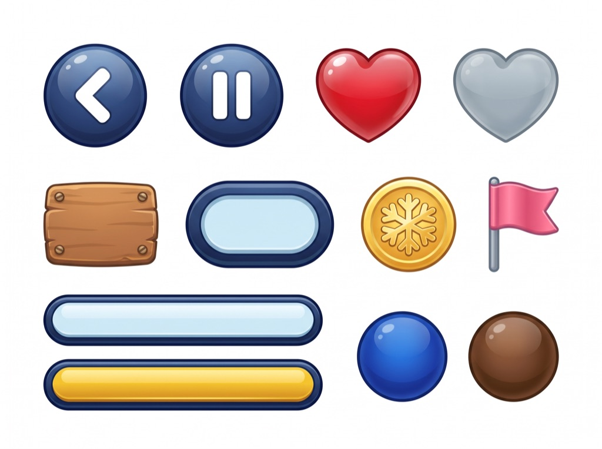
u2-v5 · ui-hud-kit
ปุ่มย้อน/พัก หัวใจเต็ม-ว่าง แผ่นไม้เวลา ชิปเหรียญ เหรียญ ธง แถบ progress ว่าง/ทอง ลูกบอลตำแหน่ง Pip/เบนนี่ · 12 ชิ้น
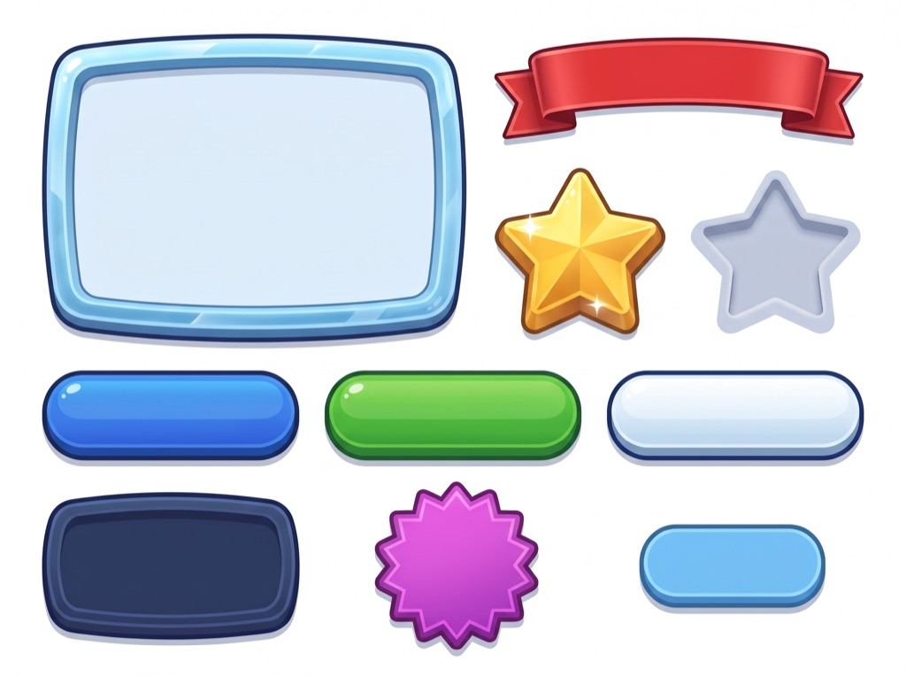
u3-v5 · ui-panel-kit
กรอบหน้าต่างน้ำแข็ง ริบบิ้นแดง ดาวทอง/ดาวว่าง ปุ่มน้ำเงิน/เขียว/ขาว ป้ายคะแนนกรมท่า ตราดาวม่วง แท็กฟ้า · 10 ชิ้น
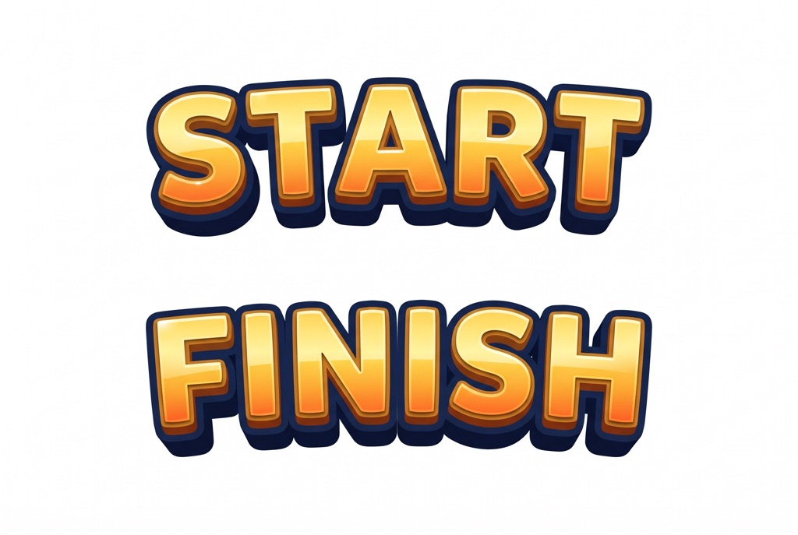
u4-v5 · lettering
ตัวอักษร START / FINISH ทองนูน 3 มิติ
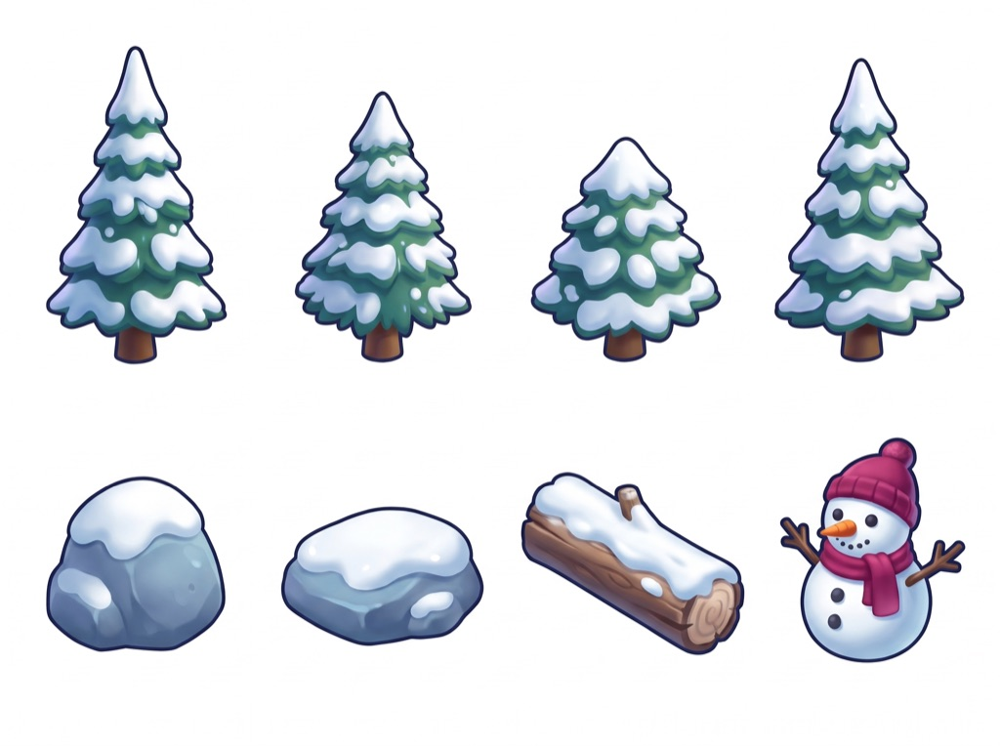
s04-v5 · obstacles-a
ต้นสน 4 หิน 2 ท่อนไม้ ตุ๊กตาหิมะ · ลำดับเดิม
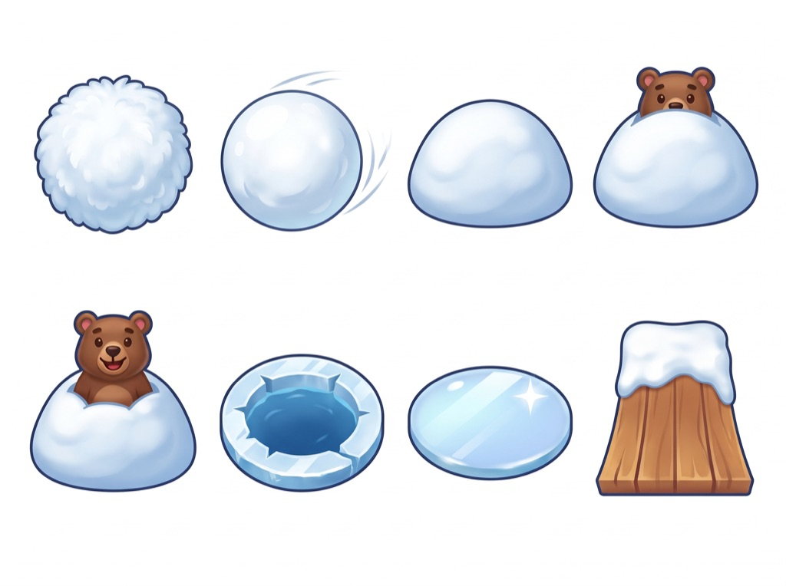
s05-v5 · obstacles-b
ก้อนปุย ก้อนหิมะกลิ้ง เนินปิด เนินหมีโผล่ตา เนินหมีขึ้น หลุมน้ำแข็ง แผ่นน้ำแข็ง แท่นกระโดด · 8 ชิ้นตรงตาราง
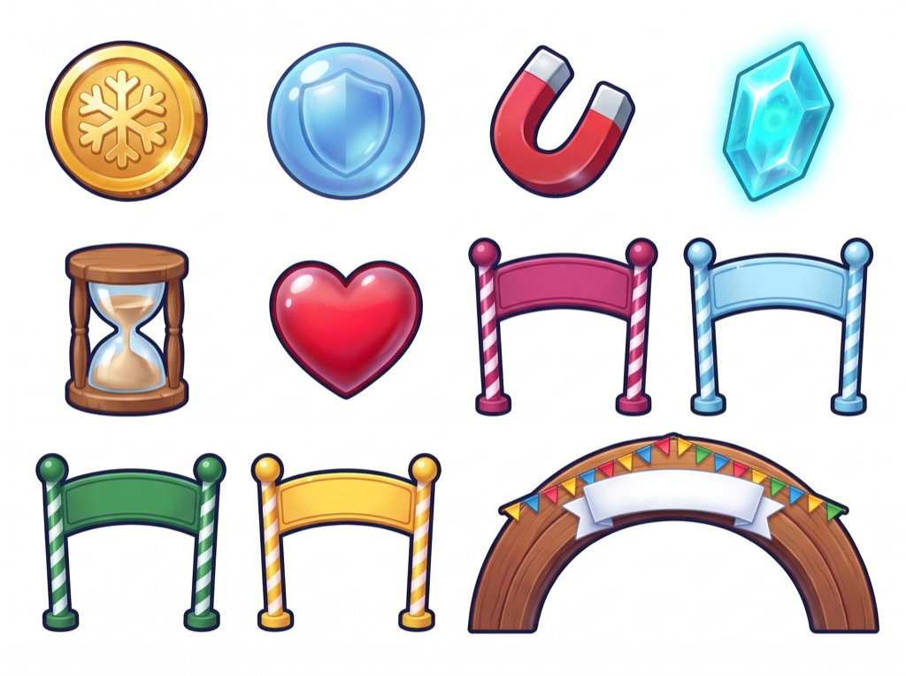
s06-v5 · items-gates
เหรียญ โล่ แม่เหล็ก คริสตัล นาฬิกาทราย หัวใจ ประตู 4 สี ซุ้ม · 11 ชิ้น
b1-v5 · backdrop-w1
ฟ้าน้ำเงิน-ชมพู เมฆฟู ภูเขาหิมะ กระท่อม-ต้นสนบางตา
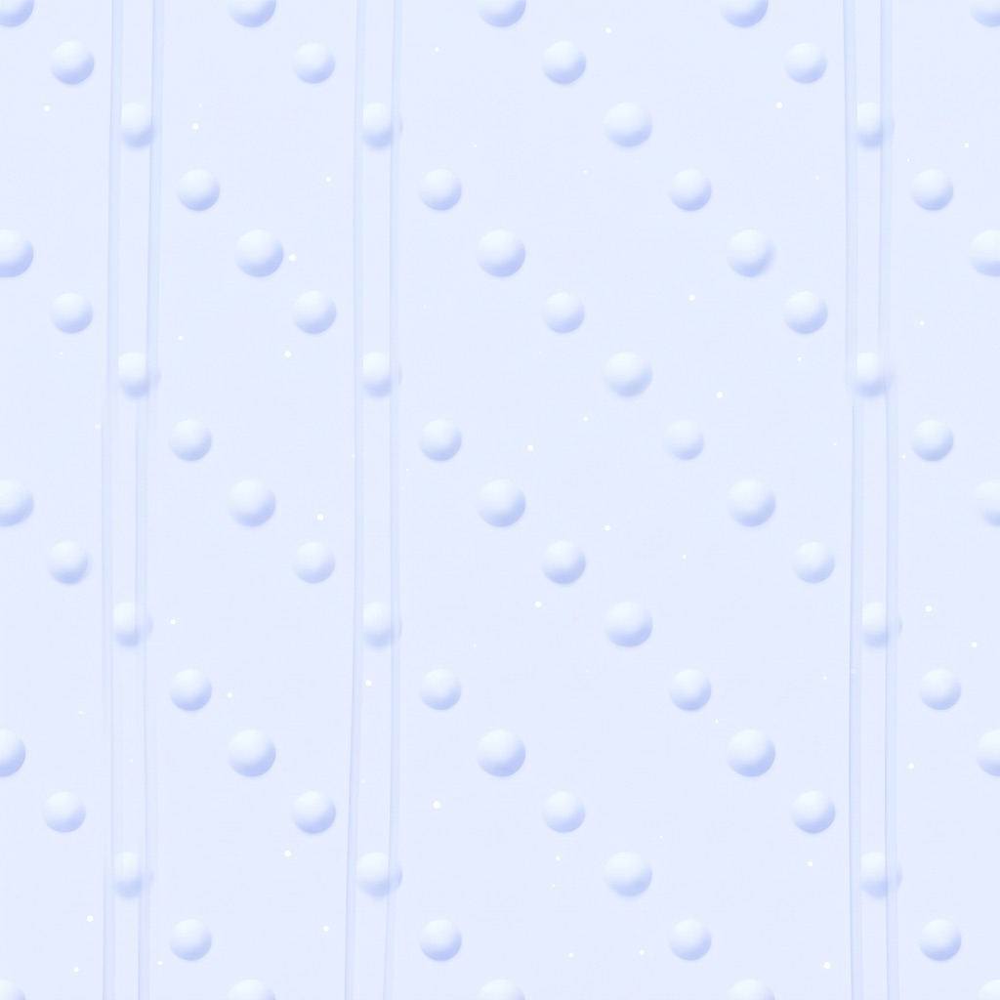
b2-v5 · snow-tile-w1
ปุ่มหิมะนุ่ม ร่องสกีแนวตั้ง ประกาย · ต้องเช็กรอยต่อตอน tile
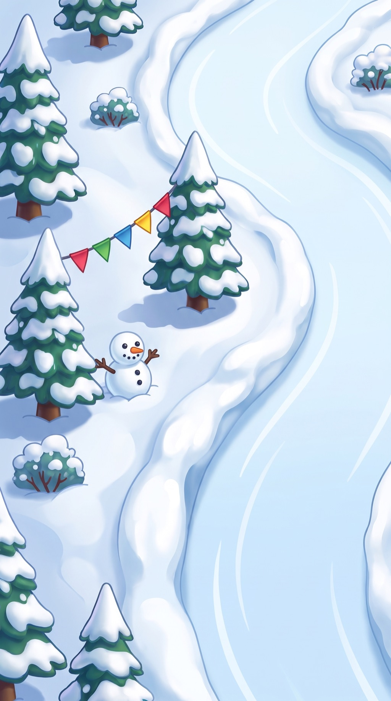
b3-v5 · edge-strip-w1
ตลิ่งหิมะ ต้นสนใหญ่ ตุ๊กตาหิมะ ธงราว พุ่มไม้ ไม่มีสิ่งปลูกสร้าง
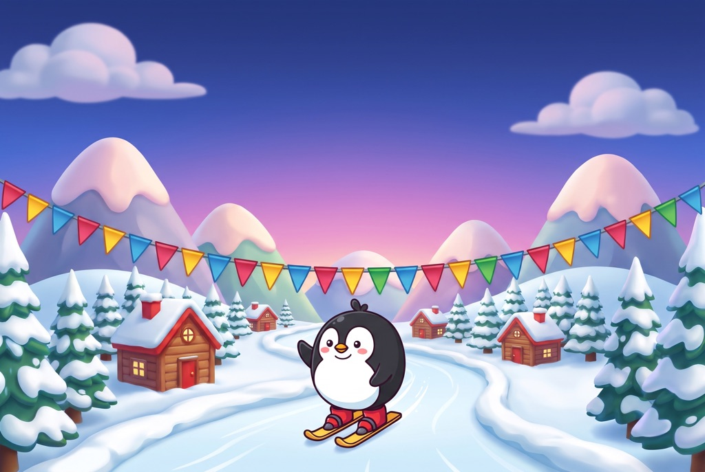
t2-v5 · title-2d
Pip v4 โบกมือ ธงราว ภูเขา ฟ้าน้ำเงิน-ชมพู เว้นฟ้าบน 40% ให้โลโก้
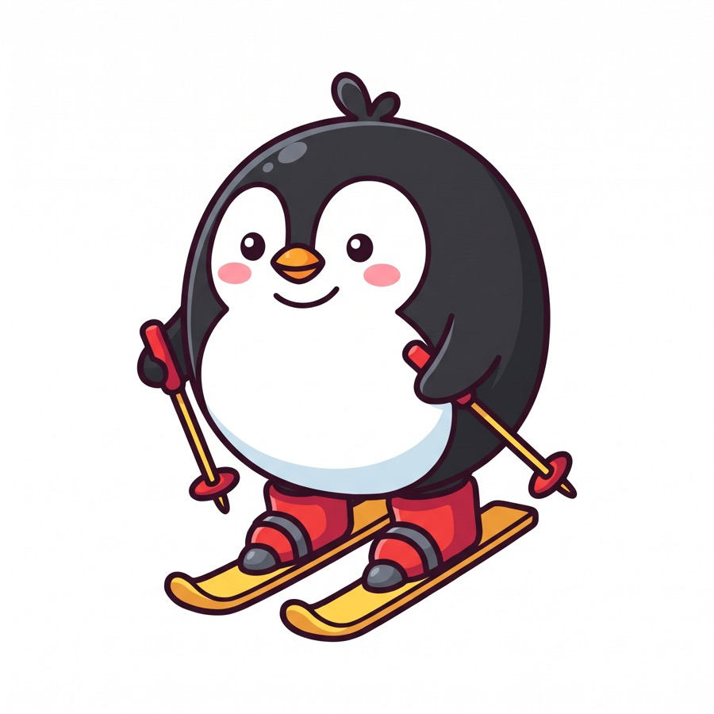
pipv4-C · ภาพอ้างอิง (เลือกแล้ว)
element pip-v4 · probe A/B ด้านล่าง
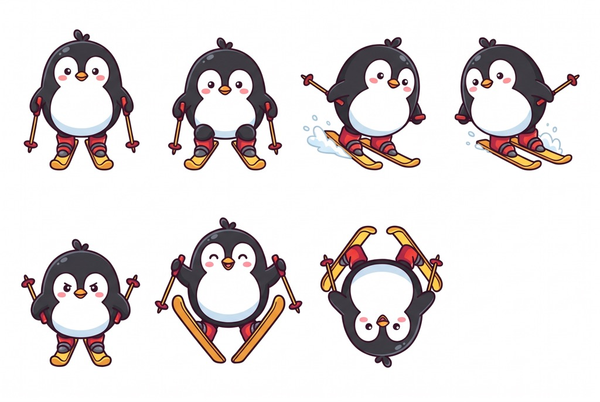
s01-v4 · pip-ski-a
ตรง / ตรงย่อเข่า (เฟรม 2 ของ ski-pump) / เลี้ยวซ้าย / เลี้ยวขวา / เร่ง / กระโดด / ตีลังกา · ท่าเร่งออกมาเป็นยืนกางไม้ค้ำ
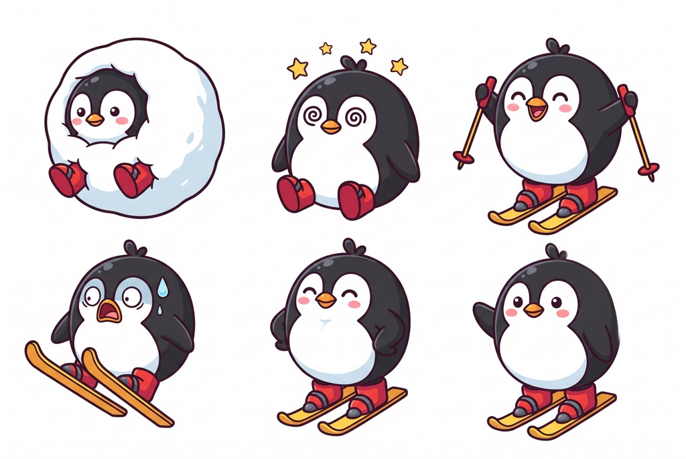
s02-v4 · pip-ski-b
ล้มในก้อนหิมะ / มึน / เฮ / ตกใจ / ภูมิใจ / โบกมือ · ดาวท่ามึนเป็นเกาะแยก
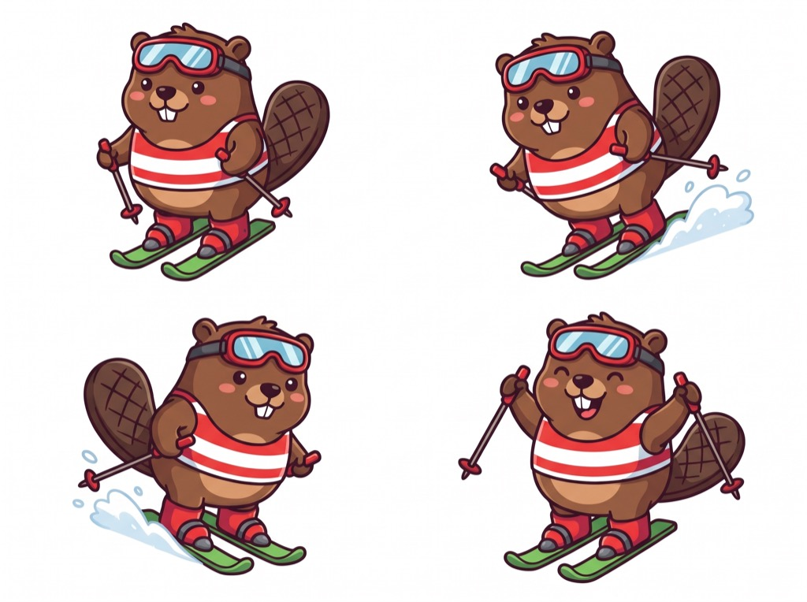
s03-v4 · benny
ครบ 4 ท่า ไม่มีเศษ · สไตล์เดียวกับ Pip v4
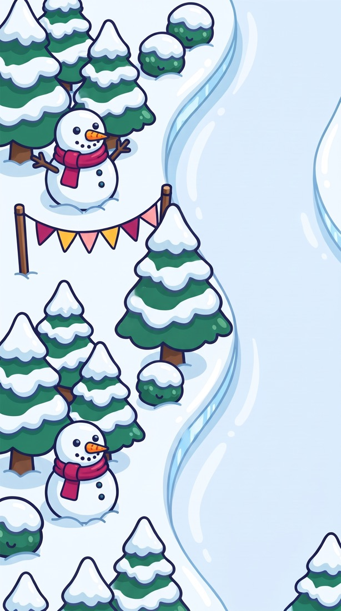
b3-v4 · ขอบลานโลก 1 (ทำใหม่)
ตัดซุ้มโกโก้ออก (ในเกมถูกครอปจนดูเหมือนโต๊ะแดง) เหลือต้นสน ตุ๊กตาหิมะ ธง พุ่มไม้